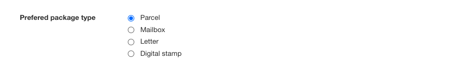
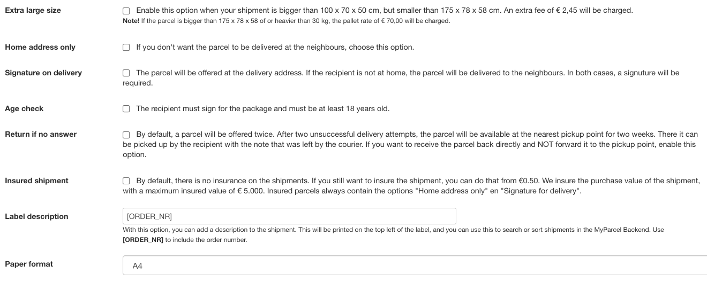
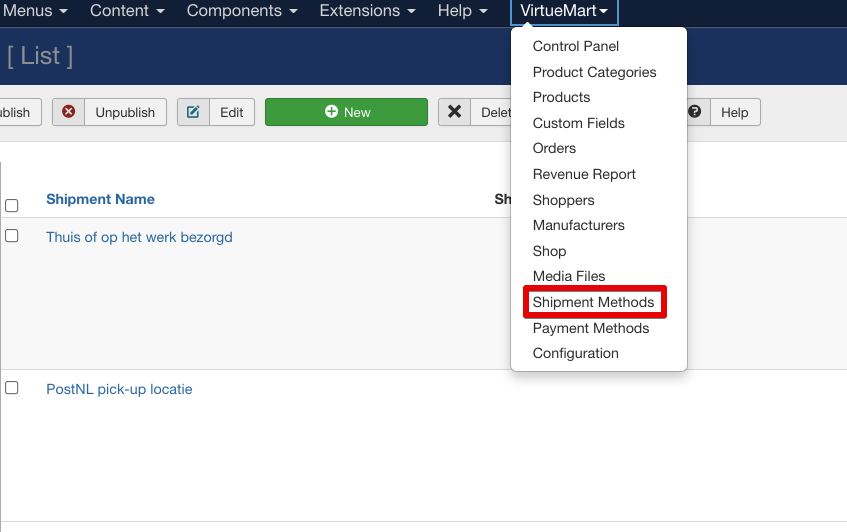
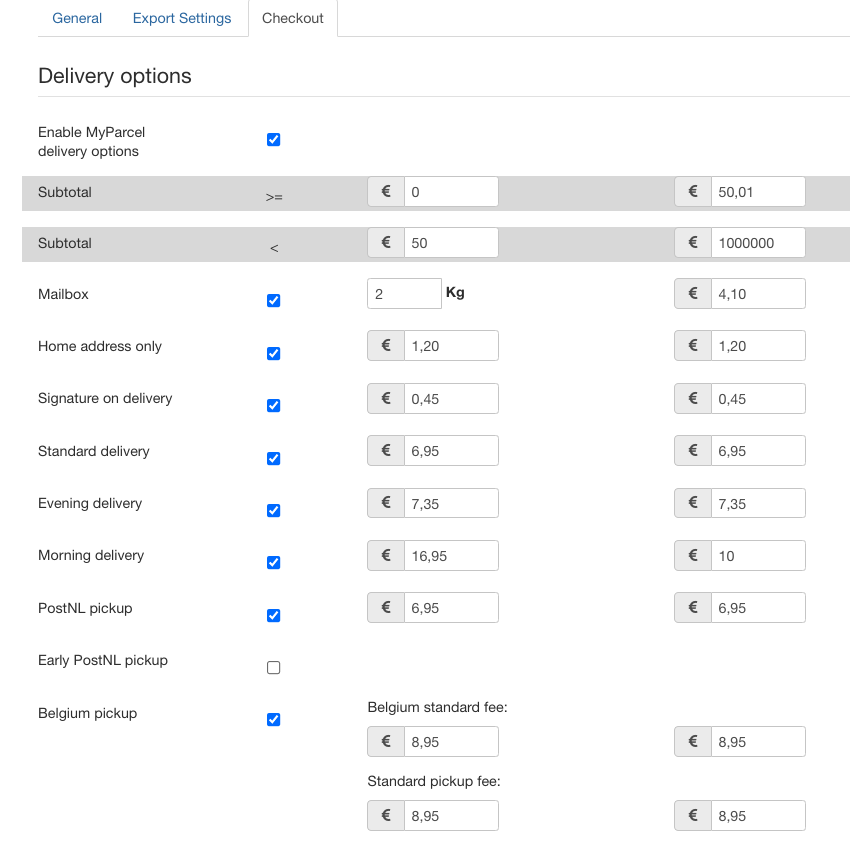

Inleiding
Met de VirtueMart 3 plugin worden onderstaande verzendopties ondersteund
Let op: De MyParcel VM plugin is alleen compatible met met de standaard checkout van VirtueMart!
1. Installatie
1.1 Nieuwe installatie
Download de VM plugin via deze link. Ga in jouw VM backend naar Extensions >> manage >> install >> upload package file. Sleep het zip bestand wat je gedownload hebt hiernaartoe, of selecteer de zip file vanaf je pc.
1.2 Updaten bestaande installatie
De plugin update kun je downloaden via onze Github pagina.. Voordat je gaat updaten raden wij je aan om de plugin eerst te deactiveren, en de nieuwe versie daarna te uploaden. Ook is ons advies om een nieuwe update eerst in een testomgeving uit te proberen.
1.3 Testen
Wij adviseren om 'na het installeren en configureren van de plugin' het bestelproces te doorlopen door een testbestelling te plaatsen en zo te bekijken of de checkout naar wens is. Het is ook mogelijk om zendingen te exporteren na het configureren van de plugin en het downloaden van labels te testen. Er worden geen kosten in rekening gebracht, zolang je de labels niet inlevert bij PostNL.
LET OP: Zodra je een Digitale Postzegel heb geprint, wordt deze (in tegenstelling tot de pakketlabels) direct in rekening gebracht.
2. Configuratie
Nadat je de plugin via Extensions -> Manage >> Manage hebt geactiveerd, ga je naar Components >> MyParcel NL >> configurations om de MyParcel plugin te openen.2.1 Account
API key
Om de koppeling met jouw MyParcel backoffice te maken, heb je een API key nodig. Deze kan je in jouw MyParcel backoffice terugvinden. Klik rechts bovenin op het  teken > Shop instellingen > Selecteer de gewenste shop > Algemeen > API instellingen. Scroll hier door naar API instellingen en genereer je API key. Sla de key op en kopieer deze vervolgens om in de plugin te plakken (copy/paste).
teken > Shop instellingen > Selecteer de gewenste shop > Algemeen > API instellingen. Scroll hier door naar API instellingen en genereer je API key. Sla de key op en kopieer deze vervolgens om in de plugin te plakken (copy/paste).
2.2 Algemene instellingen
Adresvelden
Hier kun je kiezen hoe je de adresvelden wilt gebruiken
2.3 Standaard exportinstellingen
Wij raden aan om het emailadres te koppelen indien je gebruik maakt van de MyParcel track&trace.
Het telefoonnummer kan handig zijn voor de bezorger in het EU gebied indien dit nodig is.
In de VM plugin ondersteunen wij 4 verzendtypes

Beschikbare opties: Handtekening voor ontvangst, Alleen geadresseerde, Retour bij geen gehoor, Extra groot formaat, 18+-check en verzekering tot €500. Let op, deze kosten komen voor rekening van de verzender.

Nederland
Beschikbare verzendtypes: Thuislevering en Pickup point
Ga naar VirtueMart >> verzendmethoden en configureer de methoden Pick-up point en Thuislevering. 
In de verzendmethode thuislevering selecteer je de categorieen en de landen waar je naartoe wilt versturen en vul je het standaard verzendtarief in. Het standaardtarief wordt bij gebruik van extra bezorgopties overschreven indien de klant hiervoor kiest in de checkout.
De verzendmethode pick-up point geldt voor zowel Nederland als Belgie. Selecteer Nederland en indien je naar Belgie verstuurt, selecteer je ook Belgie in het venster landen. Vul ook hier het standaardtarief in.
Selecteer bij categorieen welke van toepassing zijn voor pick-up point leveringen.
Beschikbare pakkettypes: Brievenbuspakket, Pakket, Ongefrankeerd label en Digitale postzegel
Beschikbare opties: Handtekening voor ontvangst, Alleen geadresseerde, Retour bij geen gehoor, Extra groot formaat, 18+-check en verzekering tot €500. Let op, deze kosten komen voor rekening van de verzender.
België
Beschikbare verzendtypes: Thuislevering en Afhaalpunt
Beschikbare pakkettypes: Pakket
Beschikbare opties: Extra groot formaat en standaard verzekering tot €500,-
Europa
Beschikbare verzendtypes: Thuislevering
Beschikbare pakkettypes: Pakket
Beschikbare opties: Standaard verzekering tot €500,-

Wanneer je op een verzendmethode klikt, opent een pop-up. In de pop-up kan je aangeven of je grbuik wilt maken van de standaard thuislevering met bezorgopties (voor rekening van de klant) of je junt kiezen voor een PostNL Pickup point. (LET OP: wanneer een ochtend of avondlevering op gekozen postcode eb hsnr combinatie niet mogelijk is, dan zal deze niet worden getoond in de pup-up.
2.4 Checkout instellingen

3. Gebruik plugin
3.1 Aanmaken van één verzendlabel
Bij het openen van een bestelling vind je bovenaan de pagina een export icoontje, hiermee exporteer je de zending, waarna je het label met de download icoontje kunt uitprinten.
3.2 Aanmaken meerdere verzendlabels
Wanneer je meerdere bestellingen in één keer wilt downloaden, kan je deze in het orderoverzicht aanvinken en in de dropdownmenu selecteren of je wilt exporteren of printen. Na het exporteren herhaal je dezelfde actie, maar dan met printen. Uiteraard kun je vanuit het orderoverzicht ook labels los exporetren en prinyten met de icoontjes aan de rechterzijde.